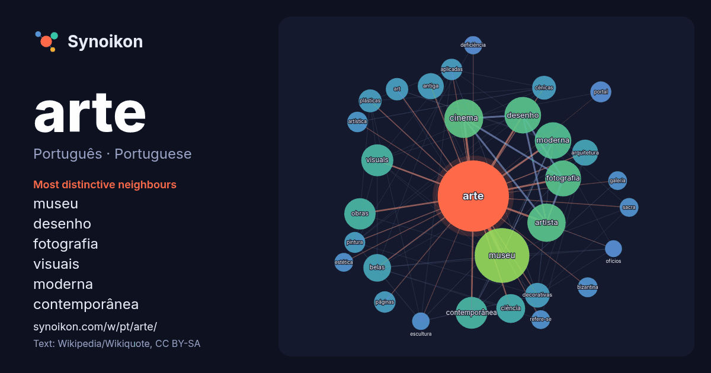

Português · Portuguese · popular word
arte
“art” · The words found around it in 1508 instances from Portuguese Wikipedia, Wikiquote.

Most distinctive neighbours
- museu 62×
- desenho 46×
- fotografia 45×
- visuais 42×
- moderna 39×
- contemporânea 38×
- cinema 32×
- decorativas 28×
- belas 26×
- cênicas 26×
- artista 26×
- plásticas 23×
- arquitetura 22×
- páginas 18×
- aplicadas 18×
- bizantina 18×
- obras 17×
- portal 17×
- ciência 17×
- art 17×
× = how many times more often than in general Portuguese Wikipedia text.
Most frequent neighbours
- museu 137
- cinema 69
- artista 67
- desenho 61
- moderna 61
- fotografia 59
- brasil 56
- série 55
- história 47
- música 47
- visuais 47
- contemporânea 46
- obras 45
- ciência 38
- belas 35
- antiga 31
- arquitetura 31
- nacional 30
- decorativas 28
- escola 27
In context
- Nota: Para outros significados, veja Arte (desambiguação). Arte (do latim: ars; lit. "técnica", "habilidade", "conhecimento" ou "maneira de fazer") é Wikipedia snippets · Arte
- arte (acrónimo para Associação Relativa à Televisão Europeia, em francês Association Relative à la Télévision Européenne) é um canal franco-alemão de serviço Wikipedia snippets · Arte (canal de televisão)
- τέχνη), expressão que significa "arte das Musas".. As Musas eram nove deidades da mitologia grega antiga que presidiam as artes e as ciências. Elas foram incluídas Wikipedia snippets · Música
- daguerreotipia. Daguerre descreveu seu processo à Academia de Ciências e Belas Artes, na França, e logo depois requereu a patente do seu invento na Inglaterra Wikipedia snippets · Fotografia
- deu grande espaço para as artes nas suas mais variadas manifestações. Além de desempenhar uma função decorativa, as artes desempenhavam também um importante Wikipedia snippets · Império Romano
- solução de problemas. Museu de Arte de São Paulo Assis Chateaubriand (mais conhecido pelo acrônimo MASP) é um museu de arte particular e sem fins lucrativos Wikipedia snippets · Museu de Arte de São Paulo
- Arte pela arte ( do francês L'Art pour l'art) é um slogan francês da segunda metade do século XIX, que expressa a filosofia de que a "verdadeira" arte Wikipedia snippets · Arte pela arte
- finalidade a organização do espaço antropizado em que vive o ser humano. É a arte e a técnica de projetar, construir e decorar abrigos, edifícios e estruturas Wikipedia snippets · Arquitetura
More Portuguese words
- ciência
- clima
- comida
- coração
- cão
- deus
- dinheiro
- família
- força
- gato
- história
- língua
- morte
- natureza
- ouro
- ponte
- saúde
- trabalho
- trem
- verdade
- vida
- água
Precomputed on 2026-10-09 with default settings (±5 words, medium corpus). The interactive map can refresh it with live data.